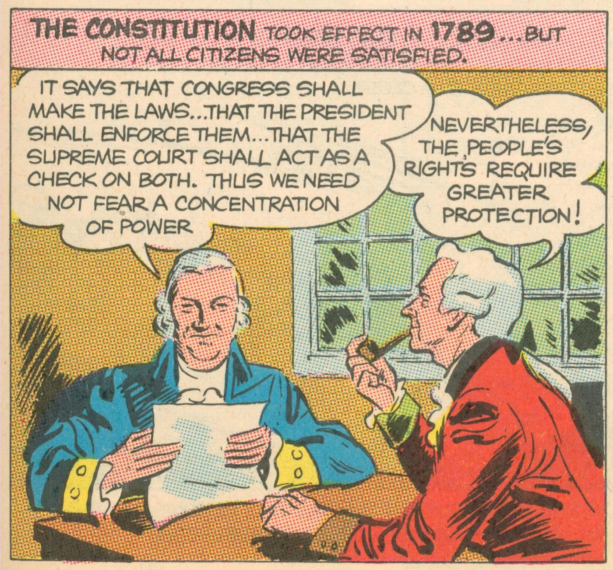

You're the fact-checker. For each part: read the comic on the left → get the check right → read the fact file → write 1–2 sentences. Done = all parts green, then turn in at the bottom.
Word help (tap to open)
- Branch = one part of the government
- Checks and balances = each branch can limit the others
- Veto = the President rejects a bill
- Amendment = a change added to the Constitution
- Federalism = power split between the national government and the states
- 1953 comic = made by the U.S. government to tell America's story in other countries. It shows one point of view.

Click the page to make it bigger.
Turn in your work
Your work saves on this device, so you can come back later. Your teacher sees it after you turn it in.
Comic: A Picture Story of the United States (1953), made for the United States Information Service, a U.S. government agency. Public domain. Scan: University of Nebraska–Lincoln Libraries, educational comics collection, via the Internet Archive.